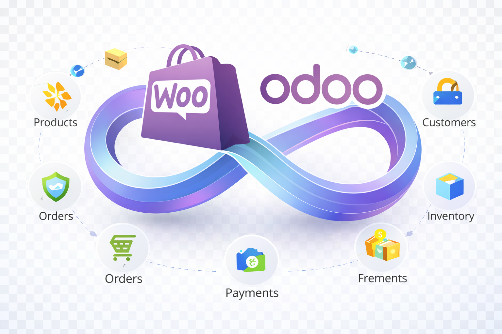
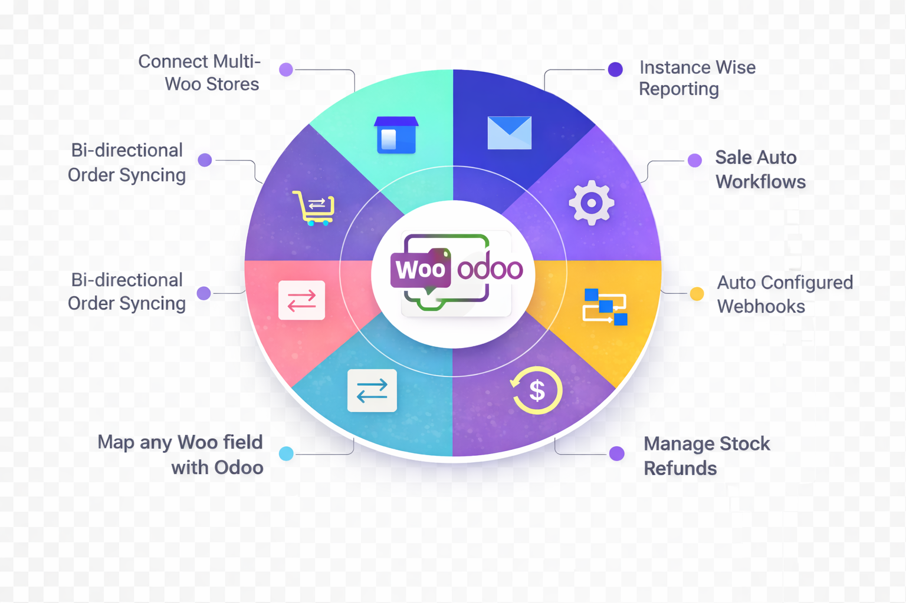
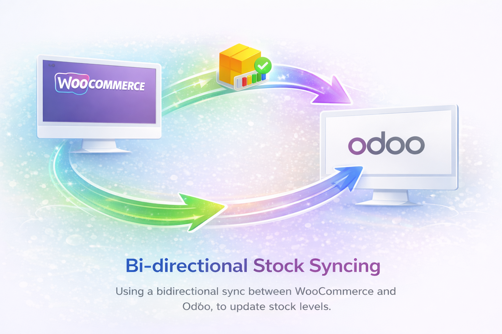
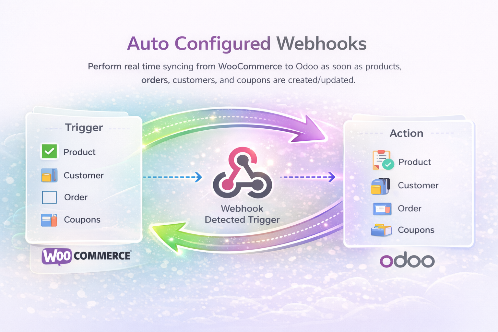
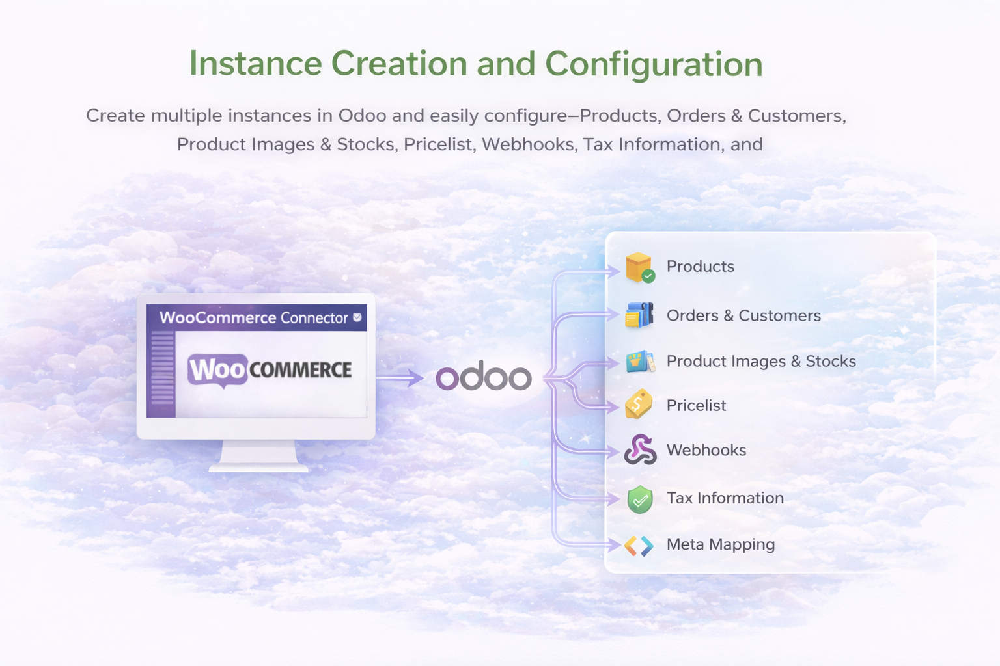

Shopify Odoo Connector
Connect Shopify with Odoo for product sync, order sync, customer updates, and inventory handling in one place.
View AppThis WooCommerce Odoo Connector is built for businesses that manage products, customers, orders, categories, coupons, and stock across WooCommerce and Odoo. It combines sync operations, field mapping, automation, webhook updates, dashboards, and reporting in one structured Odoo application.
The page layout below follows what strong marketplace competitors usually do well: a clear hero section, business-focused feature explanation, proof with real screenshots, sync flow clarity, FAQ coverage, and trust-building copy. At the same time, the wording stays grounded in your actual module.

Competitor pages usually open with a bold hero, a clear integration message, trust visuals, and a fast CTA. Your page now does that with cleaner product language and stronger visual hierarchy.
Most competitors rely heavily on screenshots because app buyers want to see real UI proof. This template uses your actual module screens as evidence for configuration, sync, inventory, orders, and reports.
Competitors often list many features but stay vague. Your page improves this by separating entities, sync directions, controls, logs, and operational outcomes so the buyer understands what the app really does.
Buyers searching for an Odoo WooCommerce integration usually want to reduce manual work, keep store data more organized, and give the operations team a central place to review activity. This connector is built around that use case. It does not just move data. It gives teams a structured way to configure instances, control sync behavior, monitor results, and work with clearer records inside Odoo.
Manage WooCommerce instances, choose sync behavior, run manual actions, and turn on automation when your business is ready.
Monitor synced records, logs, and dashboard metrics from Odoo instead of depending only on storefront views.
As order volume and catalog size grow, a structured connector helps teams keep product, customer, and order data easier to review.
One thing many competitor pages miss is direct explanation of sync direction. They say “bi-directional” but do not clearly show what moves where. This layout keeps both directions separate, which helps reduce confusion and improves buyer trust.
Use Odoo as the operational review layer for storefront data.
Push selected operational changes back to the store when needed.
Competitor pages that convert well usually show a long proof section. Use your own real screens to support every major promise.








Bring store data into Odoo faster instead of recreating everything manually.
Give operations users one place to review product, order, customer, and sync activity.
Use instances, mapping, reports, and automation as the business becomes more complex.
Check sync reports, webhook logs, and statuses when something needs attention.
| Feature Area | Included in this page copy |
|---|---|
| Store configuration | Instance-based setup, credentials, activation control, webhook secret, and sync preferences |
| Product handling | Product import, selected product push, SKU linking, prices, descriptions, categories, and tags |
| Order management | Order import, order line sync, status tracking, note updates, and sale order creation support |
| Customer management | Customer import, order-based customer upsert, guest handling, and customer push workflow |
| Additional entities | Category sync, coupon sync, inventory refresh, dashboard metrics, and reports |
| Automation | Manual actions, scheduled sync, order status cron, and webhook-driven updates |
| Advanced controls | Field mapping, sample payload extraction, mapping test, sync state tracking, and logs |
| Extended tools | Analytics dashboard, AI insight tools, AI content generation support, and chatbot endpoint in current codebase |
Add the store URL, REST API keys, optional credentials, and webhook secret in the instance setup screen.
Choose which entities to sync and add field mapping rules for products, customers, orders, or categories where needed.
Import products, customers, orders, categories, coupons, or inventory to validate configuration before full automation.
Turn on cron or webhook updates, then review reports, dashboard metrics, and sync statuses on an ongoing basis.
Looking for more Odoo solutions from our team? Explore other SDLC Corp applications built to improve automation, eCommerce operations, marketplace workflows, reporting, and business process efficiency inside Odoo.
Connect Shopify with Odoo for product sync, order sync, customer updates, and inventory handling in one place.
View App
Manage marketplace operations with structured synchronization for products, stock, customers, and order workflows.
View App
Sync Etsy orders, product data, and inventory into Odoo while improving catalog control and operational visibility.
View App
Handle multi-channel commerce workflows with Odoo-backed control over products, inventory, and order movement.
View App
Bring Walmart marketplace operations into Odoo with centralized monitoring, sync visibility, and smoother order management.
View App
Explore more business applications and custom workflow tools developed by SDLC Corp for commerce and ERP automation.
See All AppsYes. The module uses an instance-based structure, so multiple WooCommerce stores can be managed separately inside Odoo.
Yes. The current module structure supports import workflows for products, orders, customers, categories, coupons, and inventory data.
Yes. Selected product, customer, category, coupon, and order updates can be pushed from Odoo to WooCommerce.
Yes. The app includes scheduled sync mechanisms and webhook handling for faster update processing.
Yes. The field mapping framework allows mapping by entity, sample payload inspection, and test-based validation.
Sync reports, webhook logs, dashboard metrics, and sync status records are part of the current module workflow.
This version adds a premium visual feel, longer competitor-style structure, stronger content depth, clearer benefit hierarchy, and more complete feature coverage. Replace the placeholder app cards, app links, and screenshot file names with your final assets before publishing.
Save this page as static/description/index.html and keep all referenced images in the same static/description folder. Update paths if your image names differ.
Important: replace other-app-1.png to other-app-6.png and the placeholder app URLs with your real SDLC Corp marketplace app assets.